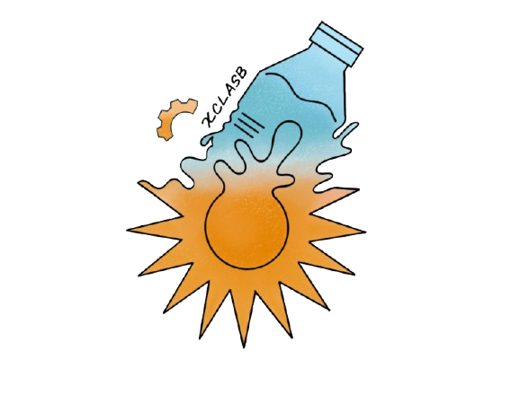
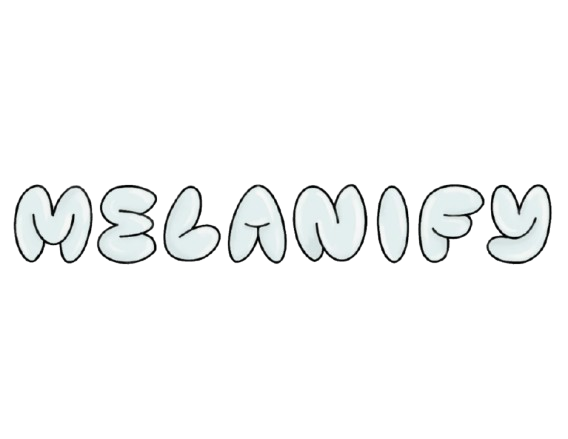
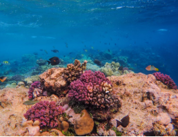
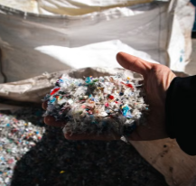
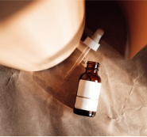

1.8M+ Tons
Annual PET & plastic waste generated in Thailand.


What if the plastic we leave behind could help protect what lies ahead?
📍 REGIONAL CONTEXT
Annual PET & plastic waste generated in Thailand.
Extreme UV Index in Thailand requiring daily protection.
National park ban on toxic chemical sunscreens in Thailand.
Before we can build a solution, we must look at the two interconnected environmental challenges unfolding right here in Thailand.

Mechanical recycling breaks down plastic's molecular structure, causing it to lose strength and quality after every cycle. This forces most recycled PET into lower-value products (like carpets and textiles) that eventually end up in landfills anyway, while chemical upcycling remains costly and energy-intensive.

Synthetic chemical UV filters cause widespread coral bleaching and marine damage, triggering strict government bans. Meanwhile, safe mineral alternatives (ZnO/TiO2) are energy-intensive to mine, expensive, and leave an undesirable white cast on the skin, limiting consumer adoption.

We developed an integrated dual-host bioconversion pathway that transforms post-consumer PET plastic waste into pure, reef-safe allomelanin. MELANIFY offers sustainable UV photoprotection by directly connecting plastic degradation to biomaterial synthesis.
Read full project description →By engineering this multi-step pathway, MELANIFY unlocks three key impacts across environmental, economic, and functional performance.

Replaces toxic synthetic sunscreen chemicals like oxybenzone with a 100% biodegradable, non-nano biomaterial that protects human skin without causing coral bleaching or marine damage.

Transforms uncollected PET plastic bottles into a high-value pigment, diverting persistent plastic pollution from Thai rivers and oceans into a closed-loop economic model.

Combines natural broad-spectrum light extinction with powerful free-radical scavenging capabilities to deliver enhanced SPF protection and anti-aging skin benefits.
Dive into our iterative Design-Build-Test-Learn cycles, enzyme characterizations, and expression models behind the six-step MELANIFY pathway.
Explore Our EngineeringTo convert persistent plastic waste into reef-safe photoprotection, MELANIFY uses a dual-host synthetic pipeline dividing PET monomer degradation and allomelanin synthesis between Pichia pastoris and Escherichia coli. Explore our iterative Design-Build-Test-Learn cycles, plasmid construction, and quantitative assay results.
Dive into our iterative DBTL design cycles, genetic construct validation, and experimental assay data across both host chassis.
Explore Wet Lab & EngineeringDiscover our biocontainment protocols, dual-host organism risk assessment, and lab safety measures.
View Safety ProtocolsExplore our project description, dual-host pipeline, and design.
Dive into engineering cycles, results, parts, and safety protocols.
See how stakeholder feedback, education, and market analysis shaped us.
Meet the students and advisors behind MELANIFY and view attributions.